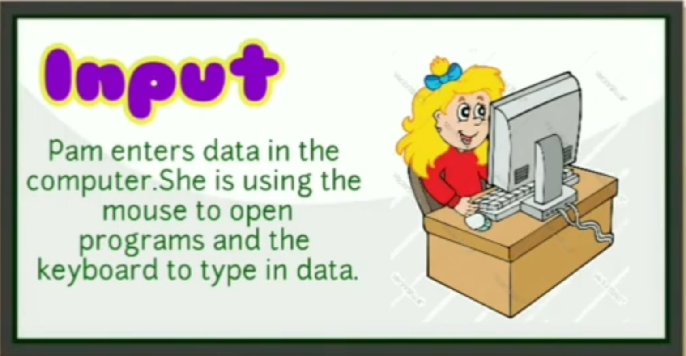
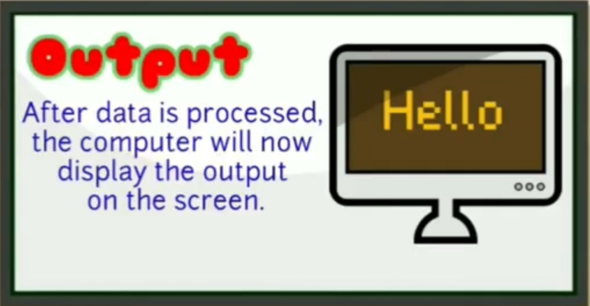

What is Data Science?
Data science is a multi-disciplinary field that uses scientific methods, processes, algorithms, and
systems to extract knowledge and insights from structured, semi-structured and unstructured data. Data science is much more than simply analyzing data. It offers a range of roles and requires a
range of skills.
History of data science
While the term data science is not new, the meanings and connotations have changed over time. The word first appeared in the ’60s as an alternative name for statistics. In the late ’90s, computer science professionals formalized the term. A proposed definition for data science saw it as a separate field with three aspects: data design, collection, and analysis. It still took another decade for the term to be used outside of academia.
What are Data and Information?
Data can be defined as a representation of facts, concepts, or instructions in a formalized manner,
which should be suitable for communication, interpretation, or processing, by human or electronic
machines. It can be described as unprocessed facts and figures. It is represented with the help of
characters such as alphabets (A-Z, a-z), digits (0-9) or special characters (+, -, /, *,>, =, etc.).
Information is the processed data on which decisions and actions are based. It is data that
has been processed into a form that is meaningful to the recipient and is of real or perceived value
in the current or the prospective action or decision of recipient. Furthermore, information is
interpreted data; created from organized, structured, and processed data in a particular context.
Data Processing Cycle
Data processing consists of the following basic steps:

In this step, the input data is prepared in some convenient form for processing.The form will depend on the processing machine.
In this step, the input data is changed to produce data in a more useful form.

At this stage, the result of the proceeding processing step is collected. The
particular form of the output data depends on the use of the data.
Three Common Types of Data Structure
The following table gives a brief overview of structured, semi structured and unstructured data.
| |
Structured Data |
Semi-Structured Data |
Unstructured Data |
| What is it? |
Data with a high degree of organization, typically stored in a spreadsheet-like manner |
Data with some degree of organization |
Data with no predefined organizational form and no specific format |
| To put it simply |
Think of a spreadsheet (e.g. Excel) or data in a tabular format |
Think of a TXT file with text that has some structure (headers, paragraphs, etc.) |
Essentially anything that is not structured or semi-structured data (which is a lot) |
| Example Formats |
- Excel spreadsheets
- Comma-separated value file (.csv)
- Relational database tables
|
- Hypertext Markup Language (HTML) files
- JavaScript Object Notation (JSON) files
- Extensible Markup Language (XML) files
|
- Images such as .jpeg or .png files
- Videos such as .mp4 or m4a files
- Sound files such as .mp3 or .wav files
- Plain text files
- Word files
- PDF files
|
| Characteristics |
- Data is structured in a spreadsheet-like manner (e.g. in a table)
- Within that table, entries have the same format and a predefined length and follow the same order
- Is easily machine-readable and can therefore be analysed without major pre-processing of the data
- It is commonly said that around 20% of the world’s data is structured
|
- Data is stored in files that have some degree of organization and structure
- Tags or other markers separate elements and enforce hierarchies, but the size of elements can vary and their order is not important
- Needs some pre-processing before it can be analysed by a computer
- Has gained importance with the emergence of the World Wide Web
|
- Data that can take any form and thus be stored as any kind of file (formless)
- Within that file, there is no structure of content
- Typically needs major pre-processing before it can be analysed by a computer, but often easily consumable for humans (e.g. pictures, videos, plain texts)
- Most of the data that is created today is unstructured
|
Applications of Data Science
- Healthcare: Data science can identify and predict disease, and personalize healthcare recommendations.
- Transportation: Data science can optimize shipping routes in real-time.
- Sports: Data science can accurately evaluate athletes’ performance.
- Government: Data science can prevent tax evasion and predict incarceration rates.
- E-commerce: Data science can automate digital ad placement.
- Gaming: Data science can improve online gaming experiences.
- Social media: Data science can create algorithms to pinpoint compatible partners.
- Fintech: Data science can help create credit reports and financial profiles, run accelerated underwriting and
create predictive models based on historical payroll data.